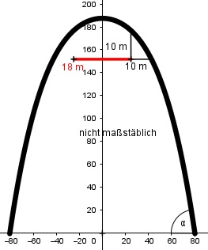

Aufgabe 71 Der Innenbogen eines parabelförmigen Bauwerks wird durch die Gleichung f(x) = 187,5 - 0,01579x2 - 0,000001988x4 beschrieben. a) Wie hoch und wie breit ist der Bogen? b) Unter welchem Innenwinkel α trifft der rechte Bogen auf die Grundfläche? c) In welcher Höhe kann ein Flugzeug mit einer Breite von 18 m durch den Bogen fliegen, wenn ein vertikaler und horizontaler Sicherheitsabstand von 10 m zu dem Bogen vorgeschrieben ist?

a) Die Exponenten der Funktionsgleichung sind gerade --> der Bogen ist achsensymmetrisch zur y-Achse --> der höchste Punkt liegt auf der y-Achse und hat die x-Koordinate 0. f(0) = 187,5 - 0,01579 * 02 - 0,000001988 * 04 = = 187,5 m = Höhe des Bogens Die Breite des Bogens entspricht dem Abstand der Nullstellen der Funktion. 187,5 - 0,01579 x2 - 0,000001988x4 = 0 Substitution: x2 = z -0,000001988z2 - 0,01579x + 187,5 = 0 A, B, C - Formel: A = -0,000001988, B = -0,01579, C = 187,5 z1,2 = z1,2 = z1,2 = 0,01579 ± 0,0417 z1,2 = ------------------ -0,000003976 z1 = 6 516,6 z2 = -14 459 Rücksubstitution: 6 516,6 = x2 |ⱱ x1,2 = ± 80,7 -14 459 = x2 --> keine weiteren Nullstellen Die Breite des Bogens beträgt 2 * 80,7 m = 161,4 m b) Der gesuchte Winkel entspricht dem Anstieg der Tangente in der Nullstelle. f'(x) = tan α = - 0,03158x - 0,000007952x3 f'(80,7) = -0,03158 * 80,7 - 0,000007952 * 80,73 f'(80,7) = -6,7277 --> α = 80,95° c) Soll horizontal ein Abstand von 10 m eingehalten werden, dann muss die Mitte des Flugzeugs 19 m vom Bogen entfernt sein. f(19) = 187,5 - 0,01579 * 192 - 0,000001988 * 194 f(19) = 181,54 m --> Fliegt das Flugzeug in einer Höhe < 181,54 m, dann ist es horizontal mehr als 10 m vom Bogen entfernt. Ohne horizontalen und vertikalen Abstand zum Bogen ist die Mitte des Flugzeugs 9 m vom Bogen entfernt. f(19) = 187,5 - 0,01579 * 92 - 0,000001988 * 94 f(19) = 186,22 m --> Fliegt das Flugzeug in einer Höhe von (186,22 m - 10 m = 176,22 m), dann ist es vertikal 10 m vom Bogen entfernt. Da 176,22 m < 181,54 m, ist es horizontal mehr als 10 m vom Bogen entfernt.